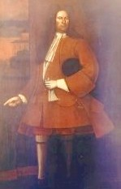

by
Stefan Bielinski
Pieter Schuyler was born in Beverwyck in 1657. He was the eldest son of New Netherland pioneer Philip Pieterse Schuyler and Margarita Van Slichtenhorst - daughter of the director of Rensselaerswyck.
Pieter Schuyler grew up in the family home on State Street. He followed his father to success in the fur trade and beyond to acquire extensive lands in and around Albany and elsewhere in New York province. Emergence as Albany's most prominent native son brought him into contact with future brother-in-law, Robert Livingston, and helped set the stage for his ascendancy at the provincial level.In July 1686, he was appointed first mayor of the city of Albany under the Dongan Charter. At age twenty-nine, he was Albany's active leader who brought the city government through Leisler's Rebellion and served in the mayor's office until 1694. In 1692, he was the first Albany man appointed to the provincial governor's advisory Council.
By 1681, Pieter Schuyler had married Albany native Engeltie Van Schaick. She died following the birth of their fourth child in 1689. Their daughter, Margarita, further cemented ties to the Livingstons when she married Robert Livingston, Jr. in 1697. In 1691, Pieter Schuyler re-married. Maria Van Rensselaer - daughter of the patroonship and Van Cortlandt Manor as well, bore him five more children. These Schuylers settled into their own riverside home on Court Street near the Ruttenkill. Both were pillars of the nearby Dutch church where Pieter was a church officer.
As mayor of Albany, Pieter Schuyler headed the Albany Commissioners for Indian Affairs. The city charter had invested these city fathers with the exclusive right to negotiate with the Indians. Schuyler's trading background and facility with native dialect brought him to the front of frontier diplomacy. A long time active member, as colonel of the Albany militia, he led the attack on La Prarie in 1691. By the end of the century, he was a reknowned field leader who travelled to New England, New France, and New York. In 1710, he sailed across the Atlantic - accompanying the "Four Iroquois Kings" to the court of Queen Anne. Respected by neighbors, other colonials, and adversaries, he was known to native peoples as "Quidor" or "brother."
Returning from England to an Albany County about to begin three decades of peace and growth, Colonel Schuyler settled in as the dean of native Albanians - beyond an active role in city affairs, but managing still expanding real estate holdings, continuing to sit with the Albany Indian commissioners, serving on the Council and as a royal emmisary, and presiding over Albany's most important traditional family while transitioning his base of operations more to the family farm on the flats north of the Van Rensselaer manor house.
Maria Van Rensselaer Schuyler died in 1713. Surrounded by extended family, he died in February 1724 three months shy of his sixty-sixth birthday. He was buried in the church cemetery.
 Sources: The life of Pieter Schuyler is CAP biography number 61. This profile is derived chiefly from family and community-based resources.
Sources: The life of Pieter Schuyler is CAP biography number 61. This profile is derived chiefly from family and community-based resources.
Pieter Schuyler's portrait painted by Nehemiah Partridge between 1710 and 1718 is now in the collection of the City of Albany.
Journal of 1691. Taken from NYCD, volume III, p. 800.
In New Netherland, the governor's Council also acted as a court of appeals. In 1674, the Duke of York's governor was authorized to appoint a council of advisors. That body continued to function throughout English colonial period. Ultimately, its size was limited to twelve members. Councillors were appointed by the governor and served at his pleasure. The New York provincial Council advised the governor in civil matters, approved all land patents (its most important function - thus shaping land policy), had a voice in appointments, and, until 1736, served as a court of appeals and for the correction of errors. The Council met in New York City. Its members were ranked accounding to seniority. It's senior member served in the absence of the governor from the province. Thus, Pieter Schuyler was called governor of New York in 1709 and again in 1719-20 - presiding in the times before a newly appointed royal governor's arrival in New York. Schuyler served on the Council until 1720. Robert and Philip Livingston, native son Rip Van Dam, Edward Holland, and Albany property holder William Johnson were the only other "Albany people" named to a Council made up primarily of prominent downriver merchants and British-ancestry royal adherents.
These holdings included a share of the Saratoga Patent, land at Schaghticoke, 800 acres South of Rensselaerswyck, land in Dutchess County, part of the Wawarsing, Westenhook, and Oriskany patents, and land East of Lake Champlain at the mouth of the Otter Creek - an incomplete inventory of the extensive holdings that provided a basis for long-term family prosperity!
first posted: 4/26/00; last revised 1/18/13